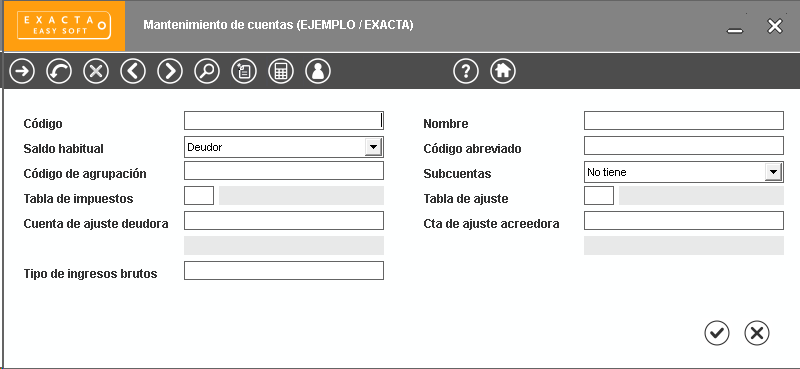

Podes definir el plan de cuentas libremente e ingresar, una a una, las cuentas que lo componen en la siguiente pantalla.
Cuando definas las cuentas recordá los niveles jerárquicos que luego plasmarás mediante vistas. Acá te dejamos un ejemplo del rubro "Disponibilidades".